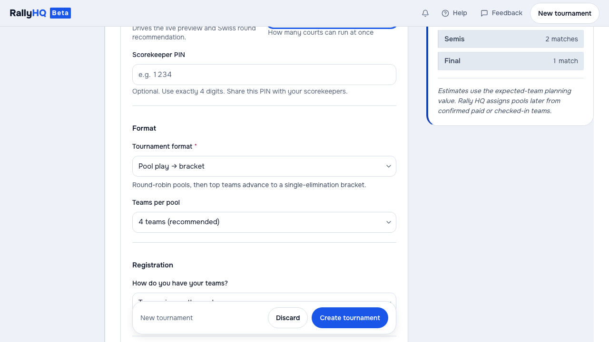

<title>One Capture, Two Ways to Teach the Product — applied: Rally HQ teaching output from a staged journey</title>
<style>
  :root {
    color-scheme: dark;
    --bg: #0e1116; --panel: #171b22; --panel2: #12151b; --line: #262c36;
    --text: #e8ecf2; --dim: #9aa5b4; --faint: #9aa5b4; --accent: #6ea8fe;
    --accent-soft: rgba(110, 168, 254, .12); --ok: #7fd6a0;
    --display: "Avenir Next Condensed", "Arial Narrow", "Roboto Condensed", sans-serif;
    --body: "Avenir Next", "Segoe UI", system-ui, sans-serif;
    --mono: "SF Mono", ui-monospace, "Cascadia Code", Consolas, monospace;
  }
  * { box-sizing: border-box; }
  body { margin: 0; overflow-x: hidden; background: var(--bg); color: var(--text); font: 16px/1.58 var(--body); }
  .slide { padding: clamp(54px, 8vw, 112px) clamp(20px, 6vw, 72px); border-bottom: 1px solid var(--line); }
  .wrap { width: min(1080px, 100%); margin-inline: auto; }
  .eyebrow, .label, .source-note, .flow, summary { font-family: var(--mono); }
  .eyebrow { margin: 0 0 14px; color: var(--dim); font-size: 12px; letter-spacing: .14em; text-transform: uppercase; }
  .eyebrow b { margin-right: 10px; color: var(--accent); }
  h1, h2, h3 { font-family: var(--display); line-height: .96; text-transform: uppercase; }
  h1 { max-width: 12ch; margin: 0 0 24px; font-size: clamp(52px, 9vw, 112px); }
  h2 { max-width: 16ch; margin: 0 0 22px; font-size: clamp(36px, 5.2vw, 60px); }
  h3 { margin: 0 0 10px; font-size: 23px; }
  h1 .dot { color: var(--accent); }
  .lede { max-width: 66ch; margin: 0; color: var(--dim); font-size: clamp(17px, 2vw, 21px); }
  .lede strong, strong { color: var(--text); }
  .grid { display: grid; gap: 20px; margin-top: 30px; }
  .two { grid-template-columns: repeat(2, minmax(0, 1fr)); }
  .three { grid-template-columns: repeat(3, minmax(0, 1fr)); }
  .panel, .evidence, .media-frame { border: 1px solid var(--line); border-radius: 10px; background: var(--panel); }
  .panel { padding: 23px 24px; }
  .panel p { margin: 0; color: var(--dim); }
  .label { margin: 0 0 12px; color: var(--accent); font-size: 11px; letter-spacing: .13em; text-transform: uppercase; }
  figure { margin: 0; }
  .media-frame { overflow: hidden; background: #090c11; }
  .media-frame img, video { display: block; width: 100%; height: auto; }
  figcaption { padding: 13px 16px; color: var(--faint); font-size: 13px; }
  .capture { margin-top: 30px; }
  .flow { display: block; margin: 24px 0 0; padding: 22px; overflow-x: auto; border: 1px solid var(--line); border-radius: 10px; background: var(--panel2); color: var(--dim); font-size: 14px; line-height: 1.55; white-space: pre; }
  .flow b { color: var(--text); font-weight: 600; }
  .flow .accent { color: var(--accent); }
  .evidence { margin-top: 20px; }
  summary { min-height: 44px; padding: 13px 16px; cursor: pointer; color: var(--text); }
  .excerpt { margin: 0; padding: 0 16px 16px; overflow-x: auto; color: var(--dim); font: 12px/1.55 var(--mono); }
  .roles { display: grid; gap: 12px; margin-top: 30px; }
  .role { display: grid; grid-template-columns: minmax(105px, .55fr) minmax(170px, 1fr) 2fr; gap: 18px; align-items: baseline; padding: 16px 18px; border-bottom: 1px solid var(--line); }
  .role:first-child { border-top: 1px solid var(--line); }
  .role b { color: var(--accent); font-family: var(--mono); font-size: 12px; letter-spacing: .08em; text-transform: uppercase; }
  .role span { color: var(--text); font-weight: 600; }
  .role p { margin: 0; color: var(--dim); }
  .source-note { margin: 26px 0 0; color: var(--faint); font-size: 12px; line-height: 1.65; }
  .source-note a { color: var(--accent); }
  .guide-link { display: inline-block; min-height: 44px; margin-top: 22px; padding: 10px 15px; border: 1px solid var(--accent); border-radius: 6px; color: var(--text); text-decoration: none; }
  .guide-link:hover { background: var(--accent-soft); }
  a:focus-visible, summary:focus-visible { outline: 2px solid var(--accent); outline-offset: 3px; }
  @media (max-width: 760px) {
    .two, .three { grid-template-columns: 1fr; }
    .role { grid-template-columns: 1fr; gap: 5px; }
    .flow { font-size: 12px; }
  }
</style>

<section class="slide" aria-label="One product journey, two teaching outputs" aria-labelledby="outcome-title">
  <div class="wrap">
    <p class="eyebrow"><b>Ways of Working · Applied</b> Rally HQ</p>
    <h1 id="outcome-title">One capture.<br>Two ways to teach<span class="dot">.</span></h1>
    <p class="lede">Rally HQ now has click-through guides and matching videos for its organizer, captain and fan journeys. Each pair comes from one set of captured product frames and teaching steps. A reader can follow the guide at their own pace or watch the same path unfold.</p>
    <a class="guide-link" href="https://rallyhq.app/demos/create-tournament/">Try the tournament guide</a>
    <figure class="media-frame capture">
      
      <figcaption>A captured staged product frame. It shows a tournament form; it does not show customer activity or a live hosted event.</figcaption>
    </figure>
  </div>
</section>

<section class="slide" aria-label="Watch the matching tournament video" aria-labelledby="video-title">
  <div class="wrap">
    <p class="eyebrow"><b>02</b> The playable version</p>
    <h2 id="video-title">The video keeps the path whole</h2>
    <p class="lede">The same staged create-tournament journey is available here as a video with its own controls. It uses the captured stills, captions and target areas from the guide's source. It has no spoken narration; the written steps in the linked guide provide a descriptive alternative.</p>
    <figure class="media-frame capture">
      <video controls playsinline preload="metadata" poster="https://nc-demos.pages.dev/applied/one-capture-two-outputs/img/tournament-step.png" aria-describedby="video-caption">
        <source src="img/walkthrough.mp4" type="video/mp4">
        Your browser does not support HTML video. The captured tournament frame and written explanation remain available on this page.
      </video>
      <figcaption id="video-caption"><strong>Synthetic staged tournament.</strong> Demonstration footage of the product flow, not user data, customer behavior, or a claim that every path has been validated.</figcaption>
    </figure>
  </div>
</section>

<section class="slide" aria-label="One captured manifest supplies both outputs" aria-labelledby="source-title">
  <div class="wrap">
    <p class="eyebrow"><b>03</b> The source shape</p>
    <h2 id="source-title">The guide keeps each teaching step addressable</h2>
    <p class="lede">Agents drive the real app through a staged journey. The capture pauses before each action, saves a clean frame, and records its caption and target area in a manifest—a file describing each teaching step. Render Kit reads that same manifest to build the click-through player and the motion video. A changed explanation has one source to update.</p>
    <pre class="flow" aria-label="Source-bound path from app journey to two teaching outputs"><b>Rally HQ app journey</b>
  <span class="accent">→</span> frames + captions + target areas
     <span class="accent">→</span> one shared manifest
        <span class="accent">├─</span> click-through guide
        <span class="accent">└─</span> motion video</pre>
    <details class="evidence">
      <summary>Show the captured-step evidence</summary>
      <pre class="excerpt">"frame": "step-09.png",
"kind": "select",
"caption": "Choose a format. Single elimination is just a bracket — so the form drops the pool settings entirely.",
"hotspot": { "x": 555, "y": 350, "w": 555, "h": 44 }</pre>
    </details>
  </div>
</section>

<section class="slide" aria-label="Four guides for organizer, captain and fan jobs" aria-labelledby="roles-title">
  <div class="wrap">
    <p class="eyebrow"><b>04</b> The reader journeys</p>
    <h2 id="roles-title">Four views begin with four jobs</h2>
    <p class="lede">The catalogue names the reader role before it names the demo. That keeps the teaching surface from pretending every visitor needs the organizer’s setup flow.</p>
    <div class="roles" role="list" aria-label="Rally HQ walkthrough catalogue">
      <div class="role" role="listitem"><b>Organizer</b><span>Create a tournament</span><p>Build a tournament from the dashboard.</p></div>
      <div class="role" role="listitem"><b>Organizer</b><span>Run it on game day</span><p>Work through pools, scheduling, and scores that update across the event.</p></div>
      <div class="role" role="listitem"><b>Captain</b><span>Run your team</span><p>Find the team, pool, and results from a phone.</p></div>
      <div class="role" role="listitem"><b>Fan</b><span>Follow it live</span><p>See scores and standings without an app or login.</p></div>
    </div>
  </div>
</section>

<section class="slide" aria-label="Shared labels prevent separate cards drifting" aria-labelledby="catalogue-title">
  <div class="wrap">
    <p class="eyebrow"><b>05</b> The shared catalogue</p>
    <h2 id="catalogue-title">Labels have one place to come from</h2>
    <div class="grid two">
      <div class="panel"><p class="label">Real state first</p><h3>The product supplies the scene</h3><p>Frames come from the demonstrated interface, not from a title card or a separately drawn mockup. The guide can point at a choice because the choice existed in the captured journey.</p></div>
      <div class="panel"><p class="label">One catalogue</p><h3>The catalog supplies the reader label</h3><p>The homepage and static demo gallery both read the same four walkthrough definitions. The catalog holds the role, title, summary, step count, runtime label, and representative frame, so those two surfaces do not need separately authored labels.</p></div>
    </div>
    <p class="source-note">This reduces one kind of drift: separate published cards describing the same journey differently. It does not make the capture immutable, prove an identical rebuild, or replace product testing.</p>
  </div>
</section>

<section class="slide" aria-label="What these staged outputs establish" aria-labelledby="limits-title">
  <div class="wrap">
    <p class="eyebrow"><b>06</b> The evidence boundary</p>
    <h2 id="limits-title">The output teaches one staged path</h2>
    <p class="lede">This establishes a concrete teaching pattern: a product journey can support both a paced, interactive guide and a continuous video while staying attached to the same visible product state and reader-role catalogue.</p>
    <p class="lede" style="margin-top:18px;">These are synthetic demonstration journeys, not customer records. Adoption, teaching effectiveness, and production time savings have not been measured. Inspecting the outputs can show whether they explain this path; it cannot establish complete behavior across Rally HQ.</p>
    <p class="source-note"><b>Public demo:</b> <a href="https://ninochavez.co/demos/applied/one-capture-two-outputs">https://ninochavez.co/demos/applied/one-capture-two-outputs</a></p>
  </div>
</section>
